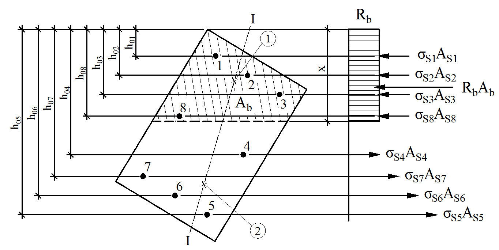
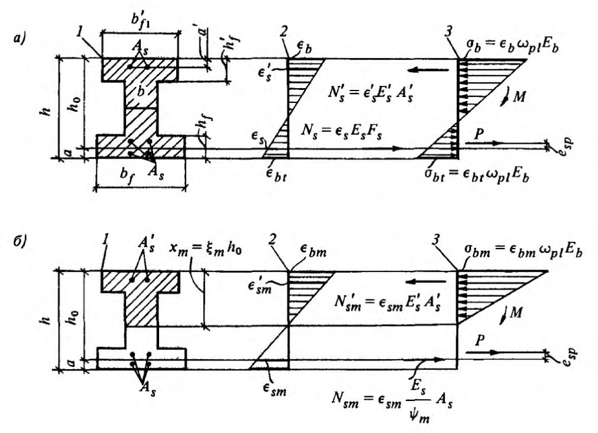

СП 95.13330.2016 «Бетонные и железобетонные конструкции из пл»
О документе: разработчики, утверждение, регистрация, ключевые слова
СВОД ПРАВИЛ СП 95.13330.2016
Издание официальное
Москва 2016
СП 95.13330.2016
1 ИСПОЛНИТЕЛИ -Федеральное государственное бюджетное образовательное учреждение высшего образования «Национальный исследовательский Московский государственный строительный университет» (НИУ МГСУ) при участии ассоциации «Железобетон»
2 ВНЕСЕН Техническим комитетом по стандартизации ТК 465 «Строительство»
3 ПОДГОТОВЛЕН к утверждению Департаментом градостроительной деятельности и архитектуры Министерства строительства и жилищнокоммунального хозяйства Российской Федерации (Минстрой России)
4 УТВЕРЖДЕН И ВВЕДЕН В ДЕЙСТВИЕ приказом Министерства строительства и жилищно-коммунального хозяйства Российской Федерации (Минстрой России) от 7 ноября 2016 г. № 781/пр и введен в действие с 8 мая 2017 г.
5 ЗАРЕГИСТРИРОВАН Федеральным агентством по техническому регулированию и метрологии (Росстандарт). Пересмотр СП 95.133330.2011 «СНиП 2.03.02-86 Бетонные и железобетонные конструкции из плотного силикатного бетона»
В случае пересмотра (замены) или отмены настоящего свода правил соответствующее уведомление будет опубликовано в установленном порядке. Соответствующая информация, уведомление и тексты размещаются также в информационной системе общего пользования - на официальном сайте разработчика (Минстрой России) в сети Интернет
© Минстрой России, 2016
Настоящий нормативный документ не может быть полностью или частично воспроизведен, тиражирован и распространен в качестве официального издания на территории Российской Федерации без разрешения Минстроя России
СП 95.13330.2016
Дата введения 2017-05-08
УДК 666.332 ОКС 91.080.40
Ключевые слова конструкции: бетонные и железобетонные, плотный силикатный бетон, арматура, расчетные значения, прочностные характеристики бетона, требования к арматуре, расчет по прочности, расчет по образованию трещин и расчет по деформациям, конструктивные требования
Директор НИИСФ РААСН \_\_\_\_\_\_\_\_\_\_\_\_\_\_\_\_\_ И.Л. Шубин
Руководитель организации-разработчика
Проректор НИУ МГСУ \_\_\_\_\_\_\_\_\_\_\_\_\_\_\_\_\_\_А.П. Пустовгар
Руководительразработки
Зав. кафедрой ТВВиБ, НИУ МГСУ \_\_\_\_\_\_\_\_\_\_\_\_\_\_\_\_\_\_Ю.М. Баженов
Исполнитель
Доцент кафедры ТВВиБ, НИУ МГСУ \_\_\_\_\_\_\_\_\_\_\_\_\_\_\_\_\_\_В.Г. Соловьев
Введение
Настоящий свод правил разработан с учетом обязательных требований, установленных в федеральных законах от 27 декабря 2002 г. № 184-ФЗ «О техническом регулировании», от 30 декабря 2009 г. № 384-ФЗ «Технический регламент о безопасности зданий и сооружений».
Свод правил разработан авторским коллективом Федерального государственного бюджетного образовательного учреждения высшего образования «Национальный исследовательский Московский государственный строительный университет» ( д-р техн. наук Ю.М. Баженов, д-р техн. наук В.Ф. Степанова, канд. хим. наук В.Р. Фаликман, канд. техн. наук В.Г. Соловьев ) при участии ассоциации «Железобетон» ( д-р техн. наук А.И. Звездов , канд. техн. наук Б.С. Соколов, Д.В. Пасхин ).
Concrete and reinforced concrete structures made of dense calcium-silicate concrete
1Область применения
Настоящий свод правил устанавливает: общие правила проектирования бетонных и железобетонных конструкций, изготовляемых из плотного силикатного бетона на плотных заполнителях и предназначенных для работы в условиях систематического воздействия температуры не выше плюс 50 °С и не ниже минус 70 °С; требования к проектированию бетонных и железобетонных конструкций, изготовляемых из силикатного бетона средней плотности (в высушенном до постоянной массы состоянии) 1700 кг/м³ и более, применяемых для строительства производственных и вспомогательных зданий и сооружений промышленных и сельскохозяйственных предприятий, жилых и общественных зданий.
При проектировании конструкций из указанного бетона, предназначенных для работы в особых условиях эксплуатации (при сейсмических воздействиях, в среде с агрессивной степенью воздействия на бетонные и железобетонные конструкции, в условиях повышенной влажности и т. п.), необходимо соблюдать дополнительные требования, предъявляемые к таким конструкциям.
2Нормативные ссылки
В настоящем своде правил приведены нормативные ссылки на следующие документы:
ГОСТ 948-84 Перемычки железобетонные для зданий с кирпичными стенами. Технические условия
ГОСТ 6665-91 Камни бетонные и железобетонные бортовые. Технические условия
ГОСТ 7473-2010 Смеси бетонные. Технические условия
| ГОСТ 8717.0-84 Ступени железобетонные и бетонные. Технические условия |
|---|
| ГОСТ 9561-91 Плиты перекрытий железобетонные многопустотные для |
| зданий и сооружений. Технические условия |
| ГОСТ 9818-2015 Марши и площадки лестниц железобетонные. Технические |
| условия |
| ГОСТ 11024-2012 Панели стеновые наружные бетонные и железобетонные |
| для жилых и общественных зданий. Общие технические условия |
| ГОСТ 12504-2015 Панели стеновые внутренние бетонные и железобетонные |
| для жилых и общественных зданий. Общие технические условия |
| ГОСТ 12767-94 Плиты перекрытий железобетонные сплошные для |
| крупнопанельных зданий. Общие технические условия |
| ГОСТ 13015-2012 Изделия бетонные и железобетонные для строительства. |
| Общие технические требования. Правила приемки, маркировки, транспортирования |
| и хранения |
| ГОСТ 13578-68 Панели из легких бетонов на пористых заполнителях для |
| наружных стен производственных зданий. Технические требования |
| ГОСТ 13579-78 Блоки бетонные для стен подвалов. Технические условия |
| ГОСТ 17079-88 Блоки вентиляционные железобетонные. Технические |
| условия |
| ГОСТ 17608-91 Плиты бетонные тротуарные. Технические условия |
| ГОСТ 18979-2014 Колонны железобетонные для многоэтажных зданий. |
| Технические условия |
| ГОСТ 18980-2015 Ригели железобетонные для многоэтажных зданий. |
| Технические условия |
| Технические условия |
| Технические условия |
ГОСТ 25214-82 Бетон силикатный плотный. Технические условия
ГОСТ 26919-86 Плиты подоконные железобетонные для жилых, общественных и вспомогательных зданий. Технические условия
ГОСТ 27751-2014 Надежность строительных конструкций и оснований. Основные положения
ГОСТ 31384-2008 Защита бетонных и железобетонных конструкций от коррозии. Общие технические требования
ГОСТ 31938-2012 Арматура композитная полимерная для армирования бетонных конструкций. Общие технические условия
СП 15.13330.2012 «СНиП II-22-81* Каменные и армокаменные конструкции»
СП 20.13330.2011 «СНиП 2.01.07-85* Нагрузки и воздействия»
СП 28.13330.2012 «СНиП 2.03.11-85 Защита строительных конструкций от коррозии» (с изменением № 1)
СП 50.13330.2012 «СНиП 23-02-2003 Тепловая защита зданий»
СП 63.13330.2012 «СНиП 52-01-2003 Бетонные и железобетонные конструк- ции. Основные положения» (с изменениями № 1 и № 2)
СП 70.13330.2012 «СНиП 3.03.01-87 Несущие и ограждающие конструкции»
СП 72.13330.2011 «СНиП 3.04.03-85 Защита строительных конструкций и сооружений от коррозии»
СП 112.13330.2011 «СНиП 21-01-97* Пожарная безопасность зданий и сооружений»
СП 131.13330.2012 «СНиП 23-01-99* Строительная климатология» (с изменением № 2)
Примечание - При пользовании настоящим сводом правил целесообразно проверить действие ссылочных документов в информационной системе общего пользования - на официальном сайте федерального органа исполнительной власти в сфере стандартизации в сети Интернет или по ежегодному информационному указателю «Национальные стандарты», который опубликован по состоянию на 1 января текущего года, и по выпускам ежемесячного информационного указателя «Национальные стандарты» за текущий год. Если заменен ссылочный документ, на который дана недатированная ссылка, то рекомендуется использовать действующую версию этого документа с учетом всех внесенных в данную версию изменений. Если заменен ссылочный документ, на который дана датированная ссылка, то рекомендуется использовать версию этого документа с указанным выше годом утверждения (принятия). Если после утверждения настоящего свода правил в ссылочный документ, на который дана датированная ссылка, внесено изменение, затрагивающее положение на которое дана ссылка, то это положение рекомендуется применять без учета данного изменения. Если ссылочный документ отменен без замены, то положение, в котором дана ссылка на него, рекомендуется применять в части, не затрагивающей эту ссылку. Сведения о действии сводов правил целесообразно проверить в Федеральном информационном фонде стандартов.
3Термины и определения
В настоящем своде правил применены термины по СП 63.13330, а также следующие термины с соответствующими определениями:
- 3.1влажный режим помещения
- Режим помещения, при котором относительная влажность превышает 75 %.
- 3.2конструкционная огнезащита
- Способ огнезащиты, основанный на создании на нагреваемой поверхности конструкции теплоизоляционного слоя средства огнезащиты, не изменяющего свою толщину при огневом воздействии. Примечание - К конструкционной огнезащите относятся огнезащитные напыляемые составы, обмазки, облицовки огнестойкими плитными, листовыми и другими материалами, в том числе на каркасе, с воздушными прослойками, а также комбинации данных материалов, в том числе с тонкослойными вспучивающимися покрытиями.
- 3.3мокрый режим помещения
- Режим эксплуатации помещения, при котором поверхность строительных конструкций увлажняется капельно-жидкой влагой (конденсатом, обрызгиванием, проливами).
- 3.4напыляемый огнезащитный состав
- Волокнистый или на минеральном вяжущем огнезащитный состав, наносимый на конструкцию методом напыления для обеспечения ее огнестойкости.
- 3.5нормальный влажностный режим помещения
- Режим помещения, при котором относительная влажность воздуха имеет значения свыше 60 % до 75 % включительно.
- 3.6бетон силикатный
- Бетон автоклавного и неавтоклавного твердения на известковых или известково-кремнеземистых вяжущих.
- 3.7сухой режим помещения
- Режим помещения, при котором относительная влажность воздуха не превышает 60 %.
4Общие требования к конструкциям из плотного силикатного бетона
4.1Основные положения
- в неагрессивных средах или при воздействии агрессивных газов группы А независимо от влажностного режима эксплуатации конструкций;
- при воздействии газовых (кроме газов группы А) или твердых агрессивных сред - при относительной влажности внутреннего воздуха помещений до 75 % или в сухой и нормальной зонах влажности;
- при воздействии вод вне зависимости от агрессивности - в безнапорных сооружениях.
- в отапливаемых зданиях - относительной влажностью внутреннего воздуха помещений;
- в неотапливаемых зданиях, а также в конструкциях, находящихся на открытом воздухе, - климатическими районами строительства согласно СП 131.13330.
Степень агрессивности воздействия газовых и твердых сред на конструкции из плотного силикатного бетона следует определять согласно СП 28.13330, а степень агрессивности воздействия жидких сред - по таблице 4.1.
СП 95.13330.2016 пени агрессивного воздействия, определяемой согласно указаниям 4.1.3 и повышенной на один уровень
- не более 60 % или в сухой зоне влажности (сухой режим помещения) специальных мер по защите арматуры от коррозии предусматривать не следует;
- свыше 60 % до 75 % или в нормальной зоне влажности (нормальный влажностный режим помещения) необходимо принимать меры к обеспечению сохранности арматуры в бетоне (увеличение марок бетона по плотности на одну ступень по сравнению с приведенными в 5.1.6 или нанесение на поверхность конструкции паронепроницаемого покрытия);
- свыше 75 % или во влажной зоне (влажный и мокрый режимы помещения), а также при наличии агрессивных сред и усиленном воздействии атмосферных осадков и отрицательных температур арматуру необходимо защищать от коррозии латексно-минеральным покрытием. Допускается предусматривать другие виды покрытий после специальной проверки их технологических и защитных свойств и сцепления арматуры с бетоном.
Таблица 4.1 - Степень агрессивности воздействия жидких сред на конструкции из плотного силикатного бетона
| Признаки агрессивности жидких сред | Степень агрессивного воздействия сред на конструкции | Степень агрессивного воздействия сред на конструкции | Степень агрессивного воздействия сред на конструкции |
|---|---|---|---|
| неагрессивная | слабо- агрессивная | средне- и сильно- агрессивная | |
| 1 Общекислотная агрессивность, водо- родный показатель рН | Св. 4 | От 1 до 4 | До 1 |
| 2 Содержание магнезиальных солей (магнезиальная агрессивность), концен- трация ионов Mg 2+ , г/м³ | До 300 | От 300 до 500 | Св. 500 |
| 3 Содержание свободной (агрессивной) углекислоты (углекислотная агрессив- ность) СО 2 , г/м³ | До 20 | От 20 до 50 | Св. 50 |
| 4 Щелочная агрессивность, концентрация едких щелочей в расчете на Na + + К + , кг/м³ | До 100 | 0т 100 до 150 | Св. 150 |
| 5 Содержание сульфатов (сульфатная агрессивность) в пересчете на ионы SO 4 2- , кг/м³ | До 10 | От 10 до 20 | Св. 20 |
Примечания
1 Жидкая среда считается слабоагрессивной, если глубина разрушения бетона на протяжении 50 лет не превышает 2 см.
- 2 Нормы агрессивности жидких сред в настоящей таблице приняты для интервала температур среды от 0 °С до 25 °С. При температуре среды вне пределов данного интервала заключение об агрессивности вод дается на основе результатов специальных исследований.
- 3 Проточные и непроточные пресные воды (мягкие и жесткие) по отношению к плотному силикатному бетону являются неагрессивными.
- 4 При неполном погружении (в условиях капиллярного подсоса воды) или периодическом воздействии растворов едких щелочей или сульфатных растворов с концентрацией сульфат-ионов более 600 г/м³ , т. е. при возможности накопления в порах бетона солей, оказывающих разрушающее действие на бетон, среда является сильноагрессивной по отношению к плотному силикатному бетону.
- 5 При содержании в воде веществ, не предусмотренных настоящей таблицей, степень агрессивности воздействия среды следует устанавливать на основе результатов специальных исследований.
СП 95.13330.2016
4.2Основные расчетные требования
При проектировании конструкций из плотного силикатного бетона необходимо соблюдать основные расчетные требования СП 63.13330, а при проектировании элементов стен с двух- и многорядной разрезкой - требования СП 15.13330.
4.3Дополнительные требования к проектированию предварительно напряженных конструкций
При натяжении арматуры на упоры следует учитывать: а) первые потери -от релаксации напряжений арматуры, автоклавной обработки, деформации форм (при натяжении арматуры на формы), от деформации анкеров, быстронатекающей ползучести бетона, проявляющейся в процессе обжатия; б) вторые потери -от усадки и ползучести бетона.
При натяжении арматуры на бетон следует учитывать потери: а) первые потери -от деформации анкеров, трения арматуры о стенки или поверхность конструкции; б) вторые потери -от релаксации напряжений в арматуре, усадки и ползучести бетона.
Потери предварительного напряжения арматуры следует определять по таблице 4.2. При наличии специальных опытных данных эти потери допускается принимать по результатам опытов.
При проектировании конструкций полные суммарные потери Δσ sp (2) j для арматуры, расположенной в растянутой при эксплуатации зоне сечения элемента (основной рабочей арматуры), следует принимать не менее 100 МПа.
Таблица 4.2 - Потери предварительного напряжения
| Факторы, вызывающие потери предварительного | Обоз- начение | Значение потерь предварительного напряжения, МПа, при натяжении арматуры | Значение потерь предварительного напряжения, МПа, при натяжении арматуры |
|---|---|---|---|
| напряжения арматуры | на упоры | на бетон | |
| Первые потери | Первые потери | Первые потери | Первые потери |
| 1 Релаксация напряжений арматуры: при механи- ческом способе натяже- ния: а) проволочной | sp 1 | ||
| б) стержневой | sp ser s sp R + 0,09 0,22 , sp ser s sp R + 0,09 0,22 0,4 , 0 2 50 , sp - | - - | |
| при электротермических и электротермомеханичес- ких способах натяжения стержневой арматуры | Здесь sp принимается без учета потерь, МПа. Если вычисленные значения потерь окажутся отри- цательными, их следует прини- мать равными нулю | - | |
| 2 Автоклавная обработка изделий | sp 2 | 20 | - |
| 3 Деформация анкеров, расположенных у натяж- ных устройств | sp 4 | Принимаются по пункту 9.1.6 СП 63.13330.2012 | Принимаются по пункту 9.1.7 СП 63.13330.2012 |
| 4 Трение арматуры о стенки каналов или о по- верхность бетона конст- рукций | sp 7 | - | Принимаются по пункту 9.1.7 СП 63.13330.2012 |
| 5 Деформация стальных форм при неодновре- менном натяжении арма- турных стержней | sp 3 | Принимаются по пункту 9.1.5 СП 63.13330.2012 | - |
| 6 Быстронатекающая пол- зучесть бетона | sp 6 | ( ) 0 4 bp bn R , где 0 - коэффициент, определя- емый по формуле ( ) 0 52 13 14 = + - , R bn ; bp - напряжение в бетоне на уровне центра тяжести площадей сечения напрягаемой арматуры S и S c учетом потерь по поз. 1-5 настоящей таблицы определяется по пункту 9.1.11 СП 63.13330.2012; R bn - принимается по таблице 5.3 | - |
СП 95.13330.2016
Окончание таблицы 4.2
| Факторы, вызывающие потери предварительного | Обоз- начение | Значение потерь предварительного напряжения, МПа, при натяжении арматуры | Значение потерь предварительного напряжения, МПа, при натяжении арматуры |
|---|---|---|---|
| напряжения арматуры | на упоры | на бетон | |
| Б Вторые потери | Б Вторые потери | Б Вторые потери | Б Вторые потери |
| 7 Релаксация напряжений арматуры | sp 1 | _ | Принимаются по пункту 9.1.3 СП 63.13330.2012 |
| 8 Усадка бетона (см. 8.3) | sp 5 | 30 | 30 |
| 9 Ползучесть бетона | sp 6 | 6 1 sp p s bp - , где s , ρ 1 , - коэффициенты, определяемые в соответствии с указаниями 4.3.4; sp 6 - потери, принимаемые по поз. 6 настоящей таблицы; bp - см. поз. 6 настоящей таб- лицы | 6 1 sp s bp p - |
Примечание - Потери предварительного напряжения в напрягаемой арматуре S' определяются так же, как и в арматуре S .
где е -основание натуральных логарифмов; t -время, отсчитываемое со дня окончания автоклавной обработки; б) для конструкций, предназначенных для эксплуатации при влажности окружающей воздушной среды ниже 40 %, потери от усадки бетона следует увеличивать на 25 % .
где α = Es/Eb -отношение модулей упругости напрягаемой арматуры и бетона;
s -коэффициент армирования сечения напрягаемой арматурой, определяемый по формуле
1 -коэффициент, определяемый по формуле
здесь -усилие обжатия с учетом потерь напряжения по позициям 1 - 5 таблицы 4.2;
t -характеристика ползучести бетона, определяемая по формуле
здесь b,cr -предельное значение характеристики ползучести бетона, определяемое согласно 5.1.14;
4 -коэффициент нелинейности, принимаемый по таблице 4.3 или по формулам:
φ l 2 -коэффициент, учитывающий продолжительность действия напряжений bp , определяемый по таблице 4.4 или по формуле
где t -время, сут, от обжатия бетона до нагружения или испытания конструкции; если этот срок неизвестен, значение φ l 2 следует принимать при t = 100 сут.
Значения функции Ф могут определяться по таблице 4.5 в зависимости от величины t и произведения s p1.
Таблица 4.3 - Значение коэффициента нелинейности
| Степень обжатия бетона bp /R bn | 0,4 | 0,5 | 0,6 | 0,7 | 0,8 | 0,9 | 1,0 |
|---|---|---|---|---|---|---|---|
| Коэффициент нелинейности 4 | 0,8 | 0,9 | 1,0 | 1,1 | 1,2 | 1,3 | 1,4 |
Таблица 4.4 - Коэффициент, учитывающий продолжительность действия напряжений
| Время t ,сут, от обжатия бетона до загружения или испытания кон- струкции | 3 | 7 | 14 | 28 | 60 | 90 | 100 | 120 | 180 | 240 | 300 | 360 | 720 |
|---|---|---|---|---|---|---|---|---|---|---|---|---|---|
| Коэффициент φ l 2 | 0,03 | 0,07 | 0,13 | 0,25 | 0,451 | 0,593 | 0,632 | 0,699 | 0,835 | 0,909 | 0,950 | 0,973 | 0,999 |
Таблица 4.5 - Значение функции Ф
| s 1 | Функция Фпри значении t | Функция Фпри значении t | Функция Фпри значении t | Функция Фпри значении t | Функция Фпри значении t | Функция Фпри значении t |
|---|---|---|---|---|---|---|
| s 1 | 0,4 | 0,8 | 1,2 | 1,6 | 2,0 | 2,4 |
| 0 | 0 | 0 | 0 | 0 | 0 | 0 |
| 0,1 | 0,035 | 0,070 | 0,103 | 0,135 | 0,166 | 0,196 |
| 0,2 | 0,065 | 0,125 | 0,131 | 0,234 | 0,284 | 0,330 |
| 0,3 | 0,088 | 0,169 | 0,211 | 0,309 | 0,370 | 0,378 |
| 0,4 | 0,108 | 0,205 | 0,290 | 0,368 | 0,436 | 0,444 |
| 0,5 | 0,124 | 0,234 | 0,330 | 0,413 | 0,486 | 0,550 |
| 0,6 | 0,139 | 0,259 | 0,362 | 0,451 | 0,528 | 0,593 |
| 0,7 | 0,150 | 0,285 | 0,386 | 0,489 | 0,557 | 0,624 |
| 0,8 | 0,163 | 0,300 | 0,413 | 0,509 | 0,589 | 0,657 |
| 0,9 | 0,173 | 0,316 | 0,434 | 0,531 | 0,612 | 0,680 |
| 1,0 | 0,181 | 0,330 | 0,451 | 0,551 | 0,632 | 0,699 |
| 1,1 | 0,189 | 0,342 | 0,467 | 0,567 | 0,650 | 0,716 |
| 1,2 | 0,196 | 0,353 | 0,480 | 0,582 | 0,664 | 0,730 |
| 1,3 | 0,202 | 0,364 | 0,492 | 0,595 | 0,677 | 0,743 |
| 1,4 | 0,208 | 0,372 | 0,503 | 0,607 | 0,690 | 0,753 |
| 1,5 | 0,213 | 0,381 | 0,513 | 0,617 | 0,699 | 0,763 |
| 1,6 | 0,218 | 0,389 | 0,522 | 0,626 | 0,708 | 0,772 |
| 1,7 | 0,223 | 0,396 | 0,530 | 0,636 | 0,716 | 0,779 |
| 1,8 | 0,227 | 0,402 | 0,537 | 0,643 | 0,722 | 0,786 |
5Материалы для бетонных и железобетонных конструкций
5.1Бетон
- а) классов по прочности на сжатие -В10; В12,5; В15; В20; В25; В30; В35; В40; В45; B50; B55; B60;
- б) марок по морозостойкости -F35; F50; F75; F100; F150; F200; F300; F400; F500; F600;
- в) марок по водонепроницаемости -W2; W4; W6; W8; W10;
- г) марок по средней плотности -D1700; D1800; D1900; D2000.
Примечания
- 1 Классы бетона по прочности на сжатие В соответствуют значению кубиковой прочности бетона на сжатие, МПа, с обеспеченностью 0,95 (нормативная кубиковая прочность).
- 2 Класс бетона по прочности на сжатие В необходимо указывать в проекте во всех случаях.
- 3 Марку по морозостойкости F следует назначать для конструкций, подвергающихся в увлажненном состоянии действию попеременного замораживания и оттаивания.
- 4 Марку по водонепроницаемости W следует назначать для конструкций, к которым предъявляются требования водонепроницаемости.
Бетон классов В10, В12,5 следует применять только для бетонных конструкций, эксплуатируемых при относительной влажности внутреннего воздуха помещений не более 60 % или в сухой зоне влажности.
Конструкции из бетона классов В10 и В12,5 в агрессивных средах, а также в условиях многократно повторяющейся нагрузки применять не допускается.
Для сильнонагруженных сжатых стержневых элементов (например, колонн, воспринимающих крановые нагрузки) класс бетона следует принимать не ниже В25.
Таблица 5.1 - Классы бетона в зависимости от вида и класса напрягаемой арматуры
| Вид и класс напрягаемой арматуры | Класс бетона, не ниже |
|---|---|
| 1 Проволочная арматура классов от Вр1200до Вр1600 диа- метром проволоки, мм: 5 | В20 |
| 6 и более | В25 |
| 2 Стержневая арматура (без анкеров) диаметром, мм: от 10 до 18 включ., классов: A600 и А800 | В20 |
| A1000 | В25 |
| 20 и более, классов: A600 | В20 |
| A800 | В25 |
| A1000 | В30 |
Таблица 5.2 - Требования к бетону при различных условиях эксплуатации
| Условия эксплуатации конструкций | Условия эксплуатации конструкций | Марка бетона, не ниже | Марка бетона, не ниже | Марка бетона, не ниже | Марка бетона, не ниже | Марка бетона, не ниже | Марка бетона, не ниже |
|---|---|---|---|---|---|---|---|
| по морозостойкости | по морозостойкости | по морозостойкости | по водонепроницаемости | по водонепроницаемости | по водонепроницаемости | ||
| Характеристика режима | Расчетная зимняя температура наружного воз- духа, ° С | для конструкций (кроме наружных стен отапли- ваемых зданий) зданий и сооружений класса по степени ответственности | для конструкций (кроме наружных стен отапли- ваемых зданий) зданий и сооружений класса по степени ответственности | для конструкций (кроме наружных стен отапли- ваемых зданий) зданий и сооружений класса по степени ответственности | для конструкций (кроме наружных стен отапли- ваемых зданий) зданий и сооружений класса по степени ответственности | для конструкций (кроме наружных стен отапли- ваемых зданий) зданий и сооружений класса по степени ответственности | для конструкций (кроме наружных стен отапли- ваемых зданий) зданий и сооружений класса по степени ответственности |
| | | | | | | ||
| 1 Попеременное замо- раживание и оттаи- вание: а) в водонасыщенном состоянии (например, конструкции, | Ниже минус 40 Ниже минус 20 Не более минус 40 включ. Ниже минус 5 до | F300 F200 | F200 F150 | F150 F100 | W6 W4 | W4 W2 | W2 Не нор- мируется |
| расположенные в се- зонно-оттаивающем слое грунта в районах | минус 20 включ. | F150 | F100 | F75 | W2 | Не нормируется | Не нормируется |
| вечной мерзлоты) | Минус 5 и выше | F100 | F75 | F50 | Ненормируется | Ненормируется | Ненормируется |
| б) в условиях эпизоди- ческого водонасыщения | Ниже минус 40 | F200 | F150 | F100 | W4 | W2 | Не нор- ми- руется |
| (например, надземные конструкции, посто- | Ниже минус 20 до минус 40 | F100 | F75 | F50 | W2 | Не нормируется | Не нормируется |
| янно подвергающиеся атмосферным воздей- ствиям) | включ. Ниже минус 5 до минус 20 включ. Минус 5 и выше | F75 F50 | F50 F35 | F35 | Не нормируется | Не нормируется | Не нормируется |
| в) в условиях воздушно-влажност- | Ниже минус 40 | F150 | F100 | F25 F75 | W4 | То же W2 | Не норми- руется |
| ного состояния при отсутствии эпизодиче- ского водонасыщения до | Ниже минус 20 | F75 | F50 | F35 | |||
| (например, конструк- ции, постоянно под- вергающиеся воздей- минус 40 включ. Ниже | минус 5 до минус 20 включ. | F50 | F35 | F25 | Ненормируется | Ненормируется | Ненормируется |
| ствию окружающего воздуха, защищенные от воздействия атмо- сферных осадков) | Минус 5 и выше | F35 | F25 | F25 |
Окончание таблицы 5.2
| Условия эксплуатации конструкций | Условия эксплуатации конструкций | Марка бетона, не ниже | Марка бетона, не ниже | Марка бетона, не ниже | Марка бетона, не ниже | Марка бетона, не ниже | Марка бетона, не ниже |
|---|---|---|---|---|---|---|---|
| Характеристика | Расчетная зимняя температура наружного воз- духа, ° С | по морозостойкости | по морозостойкости | по морозостойкости | по водонепроницаемости | по водонепроницаемости | по водонепроницаемости |
| режима | для конструкций (кроме наружных стен отапли- ваемых зданий) зданий и сооружений класса по степени ответственности | для конструкций (кроме наружных стен отапли- ваемых зданий) зданий и сооружений класса по степени ответственности | для конструкций (кроме наружных стен отапли- ваемых зданий) зданий и сооружений класса по степени ответственности | для конструкций (кроме наружных стен отапли- ваемых зданий) зданий и сооружений класса по степени ответственности | для конструкций (кроме наружных стен отапли- ваемых зданий) зданий и сооружений класса по степени ответственности | для конструкций (кроме наружных стен отапли- ваемых зданий) зданий и сооружений класса по степени ответственности | |
| | | | | | | ||
| 2 Возможное эпизо- дическое воздействие температур ниже 0 о С: а) в водонасыщенном состоянии (например, конструкции, находя- щиеся в грунте или под водой) | Ниже минус 40 Ниже минус 20 до минус 40 включ. Ниже минус 5 до минус 20 включ. Минус5ивыше | F150 F75 F50 F35 | F100 F50 F35 F25 | F75 F35 F25 F25 | нормируется | ||
| б) в условиях воздуш- но влажностного сос- тояния (например, внутренние конструк- ции отапливаемых зданий в период стро- ительства и монтажа) | Ниже минус 40 Ниже минус 20 до минус 40 включ. Ниже минус 5 до минус 20 включ. Минус5ивыше | F75 F35 F35 F25 | F50 F25 F25 F25 | F35 F25 F25 F25 | нормируется |
СП 95.13330.2016
- для конструкций зданий и сооружений (кроме наружных стен отапливаемых зданий) -не ниже указанных в таблице 5.2;
- наружных стен отапливаемых зданий -не ниже указанных в таблице Ж.2 СП 28.13330.2012 для тяжелого бетона.
- для внутренних конструкций зданий и сооружений, эксплуатируемых при относительной влажности внутреннего воздуха до 60 %, -D1700;
- внутренних конструкций зданий и сооружений, эксплуатируемых при относительной влажности внутреннего воздуха свыше 60 % до 75 % или в нормальной зоне влажности, а также для перекрытий санитарных узлов жилых зданий -D1800;
- наружных ограждающих конструкций и стен подвалов зданий, за исключением эксплуатируемых при относительной влажности внутреннего воздуха свыше 75 % или во влажной зоне (см. 4.1.3), -D1800:
- всех конструкций, эксплуатируемых при относительной влажности внутреннего воздуха свыше 75 % или во влажной зоне, а также для перекрытий санитарных узлов общественных зданий, для плит балконов и лоджий, карнизов, поясков и других выступающих деталей фасадов -D1900;
- конструкций, эксплуатируемых в агрессивных средах, -D1900.
Для замоноличивания стыков элементов сборных конструкций, которые в процессе эксплуатации или монтажа могут подвергаться воздействию отрицательных температур наружного воздуха, следует применять бетоны проектных марок по морозостойкости и водонепроницаемости не ниже принятых для стыкуемых элементов.
5.1.9Нормативными сопротивлениями бетона являются сопротивление осевому сжатию призм (призменная прочность) Rbn и сопротивление осевому растяжению Rbtn .
Нормативное сопротивление Rbn принято равным:
но не менее 0,8 В , где В измеряется в МПа.
Нормативное сопротивление Rbtn принято равным:
где B измеряется в МПа.
Нормативные сопротивления бетона Rbn и Rbtn с округлением в зависимости от класса бетона по прочности на сжатие приведены в таблице 5.3.
Значения расчетных сопротивлений бетона в зависимости от класса бетона по прочности на сжатие для предельных состояний первой группы Rb и Rbt приведены (с округлением) в таблице 5.5, для предельных состояний второй группы Rb,ser и Rbt,ser -в таблице 5.3.
Таблица 5.3 - Нормативные и расчетные сопротивления бетона для предельных состояний второй группы
| Вид сопротивления | Нормативные сопротивления бетона R bn , R btn и расчетные сопротив- ления бетона для предельных состояний второй группы R b,ser и R bt,ser при классе бетона по прочности на сжатие, МПа | Нормативные сопротивления бетона R bn , R btn и расчетные сопротив- ления бетона для предельных состояний второй группы R b,ser и R bt,ser при классе бетона по прочности на сжатие, МПа | Нормативные сопротивления бетона R bn , R btn и расчетные сопротив- ления бетона для предельных состояний второй группы R b,ser и R bt,ser при классе бетона по прочности на сжатие, МПа | Нормативные сопротивления бетона R bn , R btn и расчетные сопротив- ления бетона для предельных состояний второй группы R b,ser и R bt,ser при классе бетона по прочности на сжатие, МПа | Нормативные сопротивления бетона R bn , R btn и расчетные сопротив- ления бетона для предельных состояний второй группы R b,ser и R bt,ser при классе бетона по прочности на сжатие, МПа | Нормативные сопротивления бетона R bn , R btn и расчетные сопротив- ления бетона для предельных состояний второй группы R b,ser и R bt,ser при классе бетона по прочности на сжатие, МПа | Нормативные сопротивления бетона R bn , R btn и расчетные сопротив- ления бетона для предельных состояний второй группы R b,ser и R bt,ser при классе бетона по прочности на сжатие, МПа | Нормативные сопротивления бетона R bn , R btn и расчетные сопротив- ления бетона для предельных состояний второй группы R b,ser и R bt,ser при классе бетона по прочности на сжатие, МПа | Нормативные сопротивления бетона R bn , R btn и расчетные сопротив- ления бетона для предельных состояний второй группы R b,ser и R bt,ser при классе бетона по прочности на сжатие, МПа | Нормативные сопротивления бетона R bn , R btn и расчетные сопротив- ления бетона для предельных состояний второй группы R b,ser и R bt,ser при классе бетона по прочности на сжатие, МПа | Нормативные сопротивления бетона R bn , R btn и расчетные сопротив- ления бетона для предельных состояний второй группы R b,ser и R bt,ser при классе бетона по прочности на сжатие, МПа | Нормативные сопротивления бетона R bn , R btn и расчетные сопротив- ления бетона для предельных состояний второй группы R b,ser и R bt,ser при классе бетона по прочности на сжатие, МПа |
|---|---|---|---|---|---|---|---|---|---|---|---|---|
| В10 | В12,5 | В15 | В20 | В25 | В30 | В35 | В40 | В45 | В50 | В55 | В60 | |
| Сжатие осевое (призменная прочность) R bn и R b.ser | 8,4 | 10,4 | 12,4 | 16,5 | 20,4 | 24,3 | 28,1 | 32,0 | 35,5 | 39,1 | 42,7 | 46,1 |
| Растяжение осевое R btn и R bt.ser | 0,9 | 1,05 | 1,15 | 1,40 | 1,60 | 1,75 | 1,90 | 2,0 | 2,10 | 2,16 | 2,24 | 2,30 |
Таблица 5.4 - Коэффициенты надежности по бетону
| Группа предельных состояний | Коэффициенты надежности по бетону | Коэффициенты надежности по бетону |
|---|---|---|
| Группа предельных состояний | при сжатии bc | при растяжении bt |
| Первая | 1,35 | 1,55 |
| Вторая | 1,00 | 1,00 |
Таблица 5.5 - Нормативные сопротивления бетона для предельных состояний первой группы
| Вид сопротивления | Расчетные сопротивления бетона для предельных состояний первой группы R b и R bt при классе бетона по прочности на сжатие, МПа | Расчетные сопротивления бетона для предельных состояний первой группы R b и R bt при классе бетона по прочности на сжатие, МПа | Расчетные сопротивления бетона для предельных состояний первой группы R b и R bt при классе бетона по прочности на сжатие, МПа | Расчетные сопротивления бетона для предельных состояний первой группы R b и R bt при классе бетона по прочности на сжатие, МПа | Расчетные сопротивления бетона для предельных состояний первой группы R b и R bt при классе бетона по прочности на сжатие, МПа | Расчетные сопротивления бетона для предельных состояний первой группы R b и R bt при классе бетона по прочности на сжатие, МПа | Расчетные сопротивления бетона для предельных состояний первой группы R b и R bt при классе бетона по прочности на сжатие, МПа | Расчетные сопротивления бетона для предельных состояний первой группы R b и R bt при классе бетона по прочности на сжатие, МПа | Расчетные сопротивления бетона для предельных состояний первой группы R b и R bt при классе бетона по прочности на сжатие, МПа | Расчетные сопротивления бетона для предельных состояний первой группы R b и R bt при классе бетона по прочности на сжатие, МПа | Расчетные сопротивления бетона для предельных состояний первой группы R b и R bt при классе бетона по прочности на сжатие, МПа | Расчетные сопротивления бетона для предельных состояний первой группы R b и R bt при классе бетона по прочности на сжатие, МПа |
|---|---|---|---|---|---|---|---|---|---|---|---|---|
| Вид сопротивления | В10 | В12,5 | В15 | В20 | В25 | В30 | В35 | В40 | В45 | В50 | В55 | В60 |
| Осевое сжатие (призмен- ная прочность) R b | 6,2 | 7,7 | 9,2 | 12,2 | 15,1 | 18,0 | 20,8 | 23,7 | 26,3 | 29,0 | 31,6 | 34,1 |
| Осевое растяжение R bt | 0,58 | 0,68 | 0,74 | 0,90 | 1,03 | 1,13 | 1,23 | 1,29 | 1,35 | 1,39 | 1,44 | 1,48 |
Для не защищенных от солнечной радиации конструкций, предназначенных для эксплуатации в климатическом подрайоне IVA согласно СП 131.13330.2012, значения Еb, указанные в таблице 5.8, следует умножать на коэффициент 0,85.
Для бетона, подвергающегося попеременному замораживанию и оттаиванию, значения Еb, указанные в таблице 5.8, следует умножать на коэффициент условий работы бетона b 6, принимаемый по указаниям пункта 6.1.12 СП 63.13330.2012.
При наличии данных о составе бетона, условиях изготовления и т. д. допускается принимать другие значения Еb, согласованные в установленном порядке.
где bт -предельные значения характеристики ползучести бетона при влажности окружающей воздушной среды от 40 % до 75%, принимаемые по таблице 5.9;
1 -коэффициент, принимаемый равным при относительной влажности внутреннего воздуха, %:
- свыше 75 (во влажной зоне) - 1,1;
- от 40 до 75 (в зоне нормальной влажности) - 1,0;
- до 40 (в сухой зоне) - 0,9.
Влажность воздуха окружающей среды определена как средняя относительная влажность наружного воздуха наиболее жаркого месяца в зависимости от района строительства согласно СП 28.13330 или как относительная влажность внутреннего воздуха помещений отапливаемых зданий.
При наличии данных о минералогическом составе заполнителей, составе и водонасыщении бетона и т. п. допускается принимать другие значения bt , обоснованные в установленном порядке.
Для расчетной температуры ниже минус 50 °С значение bt следует принимать по экспериментальным данным.
Таблица 5.6 - Коэффициенты условий работы бетона
| Факторы, обусловливающие введение коэффициентов условий работы бетона | Коэффициенты условий работы бетона | Коэффициенты условий работы бетона |
|---|---|---|
| Условное обозначение | Числовое значение | |
| 1 Многократно повторяющаяся нагрузка | b 1 | См. таблицу 12 |
| 2 Длительность действия нагрузки: а) при учете постоянных, длительных и кратковременных нагрузок, кроме нагрузок непродолжительного действия, суммарная длительность которых за период эксплуатации ма- ла (например, крановые нагрузки; нагрузки от транспортных средств; ветровые нагрузки; нагрузки, возникающие при изго- товлении, транспортировании и возведении и т. п.), а также при учете особых нагрузок, вызванных деформациями проса- дочных, набухающих, вечномерзлых и подобных грунтов; б) при учете в рассматриваемом сочетании кратковременных нагрузок непродолжительного действия или особых нагрузок, не указанных в перечислении а) поз. 2 | b 2 | 0,85 1,00 |
| 3 Бетонирование в вертикальном положении при высоте слоя бетонирования свыше 1,5 м | b 3 | 0,9 |
| 4 Влияние двухосного сложного напряженного состояния «сжатие - растяжение» на прочность бетона | b 4 | См. формулу (6.19) |
| 5 Попеременное замораживание и оттаивание | b 6 | См. пункт 6.1.12 СП 63.13330.2012 |
| 6 Эксплуатация не защищенных от солнечной радиации кон- струкций в климатическом подрайоне IVA согласно СП 131.13330.2012 | b 7 | 0,85 |
| 7 Бетонные конструкции | b 9 | 0,90 |
| 8 Стыки сборных элементов при толщине шва менее 1/5 наименьшего размера сечения элемента и менее 10 см | b 12 | 1,15 |
| 9 Сжатые элементы с содержанием арматуры S менее 0,3 % площади сечения бетона при эксцентриситете продольного усилия е 0 > 0,3 h | b 13 | 0,90 |
|---|---|---|
| 10 Простенки площадью сечения менее 0,1 м² в стеновых па- нелях | b 14 | 0,80 |
| 11 Особенности упругопластических свойств бетона классов: В30, В35 В40 | b 15 | 0,95 |
| 0,90 | ||
| В45 | 0,85 | |
| В50-В60 | 0,80 | |
| 12 Неравномерность распределения прочности бетона всех классов по высоте сечения конструкций | b 16 | 0,85 |
Примечания
- 1 Коэффициенты условий работы бетона по поз. 1, 2, 5-7 следует учитывать при определении расчетных сопротивлений бетона Rb и Rbt, по поз. 4 - при определении Rbt,ser , а по остальным позициям - только при определении Rb .
- 2 Для конструкций, находящихся под действием многократно повторяющейся нагрузки, коэффициент b 2 учитывают при расчете по прочности, а b 1 - при расчете на выносливость и по образованию трещин.
- 3 При расчете конструкций в стадии предварительного обжатия коэффициент b 2 принимают равным единице.
- 4 Коэффициенты условий работы бетона вводятся независимо друг от друга, но при этом их произведение должно быть не менее 0,45.
Таблица 5.7 - Коэффициенты асимметрии цикла напряжений в бетоне
| Коэффициенты асимметрии цикла напряжений в бетоне b | 0-0,1 | 0,2 | 0,3 | 0,4 | 0,5 | 0,6 | 0,7 |
|---|---|---|---|---|---|---|---|
| Коэффициент b 1 | 0,50 | 0,55 | 0,60 | 0,70 | 0,75 | 0,80 | 0,85 |
где b ,min и b ,max - наименьшее и наибольшее напряжения соответственно в бетоне в пределах цикла изменения нагрузки, определяемые как для упругого тела (по приведенным сечениям) в зависимости от действия внешних нагрузок и усилия предварительного обжатия.
Таблица 5.8 - Начальные модули упругости при сжатии и растяжении
| Бетон | Начальные модули упругости при сжатии и растяжении E b 10 -3 при классе бетона по прочности на сжатие, МПа | Начальные модули упругости при сжатии и растяжении E b 10 -3 при классе бетона по прочности на сжатие, МПа | Начальные модули упругости при сжатии и растяжении E b 10 -3 при классе бетона по прочности на сжатие, МПа | Начальные модули упругости при сжатии и растяжении E b 10 -3 при классе бетона по прочности на сжатие, МПа | Начальные модули упругости при сжатии и растяжении E b 10 -3 при классе бетона по прочности на сжатие, МПа | Начальные модули упругости при сжатии и растяжении E b 10 -3 при классе бетона по прочности на сжатие, МПа | Начальные модули упругости при сжатии и растяжении E b 10 -3 при классе бетона по прочности на сжатие, МПа | Начальные модули упругости при сжатии и растяжении E b 10 -3 при классе бетона по прочности на сжатие, МПа | Начальные модули упругости при сжатии и растяжении E b 10 -3 при классе бетона по прочности на сжатие, МПа | Начальные модули упругости при сжатии и растяжении E b 10 -3 при классе бетона по прочности на сжатие, МПа | Начальные модули упругости при сжатии и растяжении E b 10 -3 при классе бетона по прочности на сжатие, МПа | Начальные модули упругости при сжатии и растяжении E b 10 -3 при классе бетона по прочности на сжатие, МПа |
|---|---|---|---|---|---|---|---|---|---|---|---|---|
| В10 | B12,5 | B15 | B20 | B25 | В30 | В35 | В40 | В45 | В50 | В55 | В60 | |
| На известково-песча- ном вяжущем | 9,9 | 11,9 | 13,8 | 16,5 | 18,8 | 20,7 | 22,0 | 23,0 | 23,6 | 24,0 | 24,3 | 24,5 |
| На известково- шлаковом вяжущем | 11,8 | 14,2 | 16,5 | 19,8 | 22,5 | 24,8 | 26,4 | 27,6 | 28,3 | 28,8 | 29,2 | 29,6 |
Примечание - При расчете слоистых конструкций по предельным состояниям первой группы в тех случаях, когда в расчете учтены слои не только из плотного силикатного бетона, но и из других материалов, приведенные в настоящей таблице значения модуля упругости плотного силикатного бетона следует увеличивать или уменьшать на 30 %, исходя из отклонения в сторону, неблагоприятную для расчета.
СП 95.13330.2016
Таблица 5.9 - Предельные значения характеристики ползучести бетона
| Бетон | Предельные значения характеристики ползучести bm при классе бетона по прочности на сжатие | Предельные значения характеристики ползучести bm при классе бетона по прочности на сжатие | Предельные значения характеристики ползучести bm при классе бетона по прочности на сжатие | Предельные значения характеристики ползучести bm при классе бетона по прочности на сжатие | Предельные значения характеристики ползучести bm при классе бетона по прочности на сжатие | Предельные значения характеристики ползучести bm при классе бетона по прочности на сжатие | Предельные значения характеристики ползучести bm при классе бетона по прочности на сжатие | Предельные значения характеристики ползучести bm при классе бетона по прочности на сжатие |
|---|---|---|---|---|---|---|---|---|
| В10 | В12,5 | B15 | B20 | B25 | B30 | B35 | В40-В60 | |
| На известково-песчаном вяжущем | 2,00 | 2,00 | 1,75 | 1,50 | 1,50 | 1,25 | 1,25 | 1,00 |
5.2Арматура
В качестве напрягаемой арматуры не допускается применять высокопрочную холоднотянутую арматурную проволоку классов Вр1400, Вр1500 и Вр1600 диаметром 4 мм и менее, а также арматурные канаты.
В качестве ненапрягаемой арматуры допускается применение композитной полимерной арматуры по ГОСТ 31938 при условии, что максимальное значение температуры при пропаривании конструкции не должно превышать значения температуры стеклования полимерной матрицы композитной арматуры.
Таблица 5.10 - Коэффициент условий работы арматуры
| Класс арматуры | Коэффициент условий работы арматуры s 3 при многократ- ном повторении нагрузки с коэффициентом асимметрии цикла s , равным | Коэффициент условий работы арматуры s 3 при многократ- ном повторении нагрузки с коэффициентом асимметрии цикла s , равным | Коэффициент условий работы арматуры s 3 при многократ- ном повторении нагрузки с коэффициентом асимметрии цикла s , равным | Коэффициент условий работы арматуры s 3 при многократ- ном повторении нагрузки с коэффициентом асимметрии цикла s , равным | Коэффициент условий работы арматуры s 3 при многократ- ном повторении нагрузки с коэффициентом асимметрии цикла s , равным | Коэффициент условий работы арматуры s 3 при многократ- ном повторении нагрузки с коэффициентом асимметрии цикла s , равным | Коэффициент условий работы арматуры s 3 при многократ- ном повторении нагрузки с коэффициентом асимметрии цикла s , равным | Коэффициент условий работы арматуры s 3 при многократ- ном повторении нагрузки с коэффициентом асимметрии цикла s , равным | Коэффициент условий работы арматуры s 3 при многократ- ном повторении нагрузки с коэффициентом асимметрии цикла s , равным |
|---|---|---|---|---|---|---|---|---|---|
| - 1,0 | - 0,2 | 0 | 0,2 | 0,4 | 0,7 | 0,8 | 0,9 | 1,0 | |
| А240 | 0,41 | 0,63 | 0,70 | 0,77 | 0,90 | 1,00 | 1,00 | 1,00 | 1,00 |
| А400 | 0,31 | 0,36 | 0,40 | 0,45 | 0,55 | 0,81 | 0,91 | 0,95 | 1,00 |
| А500 | 0,33 | 0,38 | 0,42 | 0,47 | 0,57 | 0,85 | 0,95 | 1,00 | 1,00 |
| А600 | ⎯ | ⎯ | ⎯ | ⎯ | 0,38 | 0,72 | 0,91 | 0,96 | 1,00 |
| А800 | ⎯ | ⎯ | ⎯ | ⎯ | 0,27 | 0,55 | 0,69 | 0,87 | 1,00 |
| А1000 | ⎯ | ⎯ | ⎯ | ⎯ | 0,19 | 0,53 | 0,67 | 0,87 | 1,00 |
| Вр1200 - Вр1600 | ⎯ | ⎯ | ⎯ | ⎯ | ⎯ | 0,67 | 0,82 | 0,91 | 1,00 |
| В500 | ⎯ | ⎯ | 0,56 | 0,71 | 0,85 | 0,94 | 1,00 | 1,00 | 1,00 |
Примечания
где s, min , s, max ⎯ наименьшее и наибольшее напряжения соответственно в арматуре в пределах цикла изменения нагрузки, определяемые как для упругого тела (по приведенным сечениям) от действия внешних сил и усилий предварительного обжатия.
- 2 При расчете изгибаемых элементов с ненапрягаемой арматурой для продольной арматуры принимается:
где M min , M max ⎯ наименьший и наибольший изгибающие моменты соответственно в расчетном сечении элемента в пределах цикла изменения нагрузки.
6Расчет бетонных и железобетонных элементов конструкций из плотного силикатного бетона
6.1Расчет бетонных элементов по прочности
- расчетные характеристики материалов согласно разделу 5;
- коэффициент по формуле (7.6) СП 63.13330.2012 с учетом указаний 6.1.3.
где l - коэффициент, учитывающий влияние длительного действия нагрузки на жесткость элемента в предельном состоянии, определяемый по формуле
здесь M 1 и Ml - моменты относительно центра наиболее растянутого или наименее сжатого (при целиком сжатом сечении) стержня соответственно от действия полной нагрузки и от действия постоянных и длительных нагрузок;
e - коэффициент, принимаемый равным e 0 / h , но не менее:
и не менее 0,01, где Rb - принимается с учетом коэффициентов условий работы b 15 и b 16, МПа.
6.2Расчет элементов железобетонных конструкций по предельным состояниям первой группы
6.2.1 Расчет железобетонных элементов по прочности
6.2.1.1 Расчет железобетонных элементов по прочности следует проводить на основе предельных усилий согласно требованиям пунктов 8.1.2-8.1.19, 8.1.31-8.1.52 и 9.2.1-9.2.12 СП 63.13330.2012 с учетом указаний 6.2.1.2-6.2.3.2.
6.2.1.2 Расчетные характеристики материалов следует принимать согласно указаниям раздела 5, а значение предварительного напряжения арматуры - согласно указаниям раздела 4.
6.2.2 Расчет по прочности сечений, нормальных к продольной оси элемента
6.2.2.1 Расчет сечений, нормальных к продольной оси элемента, когда внешняя сила действует в плоскости симметрии сечения и арматура сосредоточена у граней элемента, перпендикулярных указанной плоскости, следует проводить согласно пунктам 8.1.2-8.1.19 СП 63.13330.2012 с учетом указаний 6.2.2.2-6.2.2.4.
Расчет нормальных сечений, не оговоренных в настоящем пункте, следует проводить по формулам общего случая расчета нормальных сечений согласно указаниям пункта 9.2.7 СП 63.13330.2012.
6.2.2.2 Граничное значение относительной высоты сжатой зоны бетона R , при котором предельное состояние элементов наступает одновременно с достижением в растянутой арматуре напряжения, равного расчетному сопротивлению Rs , следует определять по формуле
где -характеристика сжатой зоны бетона, определяемая согласно указаниям 6.2.5;
sR напряжение в арматуре, МПа, принимаемое равным для стержневой и проволочной ненапрягаемой арматуры с физическим пределом текучести Rs , для напрягаемой арматуры с условным пределом текучести - ( Rs + 400 - sp ); σ sp - предварительное напряжение в арматуре с учетом всех потерь и γ sp = 0,9;
b, max - максимальная краевая относительная деформация в сжатой зоне бетона, принимаемая равной при учете:
- всех нагрузок - 3,5 10 -3 ;
- нагрузок, при действии которых учитывается коэффициент условий работы бетона b 2 < 1,0 [см. перечисление а) позиции 2 таблицы 5.6], - 4,5 10 -3 .
6.2.2.3 Характеристику сжатой зоны бетона следует определять по формуле
и принимать не более 0,85 (здесь Rb измеряется в МПа).
В случае если в расчете внецентренно сжатых элементов сплошного сечения учитывается косвенное армирование, величину в формулах (6.3), (6.10), (6.11), (6.13) следует определять по формуле
и принимать не более 0,9, измеряется в МПа; где Rb
2 - коэффициент, равный 10µ xy , но принимаемый не более 0,15, здесь µ xy - коэффициент косвенного армирования, определяемый по формуле (К.10) СП 63.13330.2012.
6.2.2.4 При определении коэффициента для сжатых элементов, имеющих гибкость l/i> 14, значение условной критической силы следует определять по формуле
где e и l - коэффициенты, определяемые согласно указаниям 6.1.3;
p - коэффициент, учитывающий влияние предварительного напряжения на жесткость элемента. При равномерном обжатии сечения напрягаемой арматурой p определяют по формуле
где bp - определяют при коэффициенте sp < 1,0;
Rb - принимают без учета коэффициентов условий работы бетона; 𝑒0 h - принимают не более 1,5;
СП 95.13330.2016 α = Es/Eb -отношение модулей упругости напрягаемой арматуры и бетона.
При расчете из плоскости действия изгибающего момента эксцентриситет продольной силы e 0 принимают равным значению случайного эксцентриситета (см. пункты 7.1.7 и 8.1.7 СП 63.13330.2012).
6.2.2.5 Расчет элементов по общему случаю (при любых сечениях, внешних усилиях и любом армировании) (рисунок 6.1) следует проводить из условия
при этом знак «плюс» перед скобкой принимают для внецентренного сжатия и изгиба, знак «минус» - для растяжения.
В формуле (6.8):
М - в изгибаемых элементах - проекция момента внешних сил на плоскость, перпендикулярную прямой, ограничивающей сжатую зону сечения; во внецентренно сжатых и растянутых элементах - момент продольной силы N относительно оси, параллельной прямой, ограничивающей сжатую зону и проходящей:
- во внецентренно сжатых элементах - через центр тяжести сечения наиболее растянутого или наименее сжатого стержня продольной арматуры;
- во внецентренно растянутых элементах - через точку сжатой зоны, наиболее удаленную от указанной прямой;
Sb - статический момент площади сечения сжатой зоны бетона относительно соответствующей из указанных осей, при этом в изгибаемых элементах положение оси принимается таким, как во внецентренно сжатых;
Ssi - статический момент площади сечения i -го стержня продольной арматуры относительно соответствующей из указанных осей;
si - напряжения в i -м стержне продольной арматуры, определяемые согласно указаниям настоящего пункта.
Высоту сжатой зоны х и напряжение si определяют из совместного решения уравнений:
СП 95.13330.2016 при h x h .
В уравнении (6.9) знак «минус» перед N принимают для внецентренно сжатых элементов, знак «плюс» - для внецентренно растянутых.
При определении положения границы сжатой зоны при косом изгибе требуется соблюдение дополнительного условия параллельности плоскости действия моментов внешних и внутренних сил, а при косом внецентренном сжатии или растяжении - условия, что точки приложения внешней продольной силы, равнодействующей сжимающих усилий в бетоне и арматуре и равнодействующей усилий в растянутой арматуре (либо внешней продольной силы, равнодействующей сжимающих усилий в бетоне и равнодействующей усилий во всей арматуре) должны лежать на одной прямой (см. рисунок 6.1).
Если значение si , полученное по формуле (6.11) для арматуры классов A600, A800, A1000, Вр1200, Вр1300, Вр1400, Вр1500, Вр1600, превышает Rsi , то напряжение si следует определять по формуле
=
- eli
Ri eli
В случае если найденное по формуле (6.12) напряжение в арматуре превышает Rsi без учета коэффициента s 6, в условие (6.8) и формулу (6.9) подставляют значение si , равное Rsi с учетом соответствующих коэффициентов условий работы, в том числе s 6, учитывающего работу высокопрочной арматуры при напряжениях выше условного предела текучести:
=
(
)
R
,
+
(
)
R
.
(6.12)
si
=
E
i h x
,max b s si
=
E при x h или уравнения (6.9) и уравнения
s
, b b si s
+
(
b
,max
)
+
x h
, b b
spi
i h h si
,
- x h
+
spi
,
(6.10)
(6.11) где - коэффициент, принимаемый равным для арматуры классов:
А600 - 1,20; A800, Вр1200, Вр1300, Bр1400, Вр1500, Вр1600 - 1,15.

I-I - плоскость, параллельная плоскости действия изгибающего момента, или плоскость, проходящая через точки приложения нормальной силы и равнодействующих внутренних сжимающих и растягивающих усилий;
1 - точка приложения равнодействующей усилий в сжатой арматуре и в бетоне сжатой зоны; 2 - точка приложения равнодействующей усилий в растянутой арматуре;
Рисунок 6.1 - Схема усилий и эпюра напряжений в сечении, нормальном к продольной оси железобетонного элемента, при расчете его по прочности
Для случая центрального растяжения, а также внецентренного растяжения продольной силой, расположенной между равнодействующими усилий в арматуре, значение s 6 принимается равным .
При наличии сварных стыков в зоне элемента с изгибающими моментами, превышающими 0,9 M max (где M max ⎯ максимальный расчетный момент), значение коэффициента s 6 для арматуры классов А600 и А800 принимают не более 1,1.
Коэффициент s 6 не следует учитывать для элементов:
- рассчитываемых на действие многократно повторяющейся нагрузки;
- армированных высокопрочной проволокой, расположенной вплотную (без зазоров);
СП 95.13330.2016
- эксплуатируемых в агрессивной среде.
Напряжение si вводится в расчетные формулы со своим знаком, получаемым при расчете по формулам (6.10)-(6.12), при этом необходимо соблюдать следующие условия:
- во всех случаях Rsi si - Rsci ;
- для предварительно напряженных элементов si sci , где sci напряжение в арматуре, равное предварительному напряжению spi , уменьшенному на sc,u .
В формулах (6.9)-(6.12):
Asi - площадь сечения i -го стержня продольной арматуры;
spi - предварительное напряжение в i -м стержне продольной арматуры, принимаемое при коэффициенте sp , назначаемом в зависимости от расположения стержня;
b, max - относительная деформация, принимаемая в соответствии с 6.2.4;
b,b -относительная деформация сжатия по всему сечению при х = h , принимаемая равной при учете:
- всех нагрузок - 2 10 -3 ,
- нагрузок, при действии которых учитывается коэффициент условий работы бетона b 2 < 1 [см. перечисление а) позиции 2 таблицы 5.6], - 2,5 10 -3 ; h 0 i - расстояние от оси, проходящей через центр тяжести сечения рассматриваемого i -го стержня арматуры и параллельной прямой, ограничивающей сжатую зону, до наиболее удаленной точки сжатой зоны (см. рисунок 6.1);
-характеристика, определяемая согласно указаниям 6.2.2.3;
i - относительная высота сжатой зоны бетона, равная i i x h = 0 ;
Ri , eli - относительная высота сжатой зоны, отвечающая достижению в рассматриваемом стержне напряжений, равных Rsi и Rsi соответственно. Значения Ri и eli определяют по формуле
где SRi(eli) ⎯ напряжения в арматуре, МПа;
, 400 spi spi si sRi R - -+ = МПа, ⎯ при определении Ri ;
, , spi si s eli R -= МПа, - при определении eli .
Значения spi и коэффициента определяют при механическом, а также автоматизированных электротермическом и электротермомеханическом способах предварительного напряжения арматуры классов А600, A800 и А1000 по формулам:
где spi принимают с учетом потерь, приведенных в позициях 3-5 таблицы 4.2.
При иных способах предварительного напряжения арматуры классов А600, А800 и А1000, а также для арматуры классов Вр1200, Вр1300, Вр1400, Вр1500 и Вр1600 при любых способах предварительного напряжения значения spi = 0, коэффициент = 0,8;
sc,u - предельное напряжение в арматуре сжатой зоны, принимаемое в зависимости от учитываемых в расчете нагрузок по таблице 5.6 по перечислению а) позиции 2 - равным 500 МПа, по перечислению б) позиции 2 - 400 МПа. При расчете элементов в стадии обжатия значение sc,u = 330 МПа.
Значение sc,u для элементов с высокопрочной арматурой принимают равным:
но не более 900 МПа для арматуры класса А600, 1200 МПа ⎯ для арматуры классов А800 и А1000.
где - коэффициент, принимаемый равным для арматуры классов: A600 - 10, A800 и A1000 - 15;
As,tot - площадь сечения всей продольной высокопрочной арматуры;
Aef - площадь сечения бетона, заключенного внутри контура сеток;
Rb измеряется в МПа.
СП 95.13330.2016
Значение принимают не менее 1,0 и не более: 1,2 - для арматуры класса А600; 1,6 - для арматуры классов A800 и А1000.
где µ xy - коэффициент косвенного армирования, определяемый по формуле (К.10) СП 63.13330.2012;
Rs,xy - расчетное сопротивление арматуры сеток;
Rs,xy , Rb измеряется в МПа.
6.2.3 Расчет сечений, наклонных к продольной оси элемента
6.2.3.1 При расчете сечений, наклонных к продольной оси элемента, значение коэффициента b 1 в формуле (8.55) СП 63.13330.2012 следует принимать равным 0,25; значение Qb в формуле (8.57) СП 63.13330.2012 принимают не менее 0,55 Rbt b h 0.
Формулы для определения всех других коэффициентов следует принимать по пунктам 8.1.31-8.1.35 СП 63.13330.2012.
6.2.3.2 Расчет железобетонных коротких консолей колонн на действие поперечной силы следует проводить согласно требованиям приложения Ж СП 63.13330.2012. При этом:
- в правой части условия (Ж.1) следует принимать коэффициент 0,5 вместо 0,8;
- правую часть условия (Ж.1) - не более 2,5 Rbtbh 0 ;
- в правой части условия (Ж.1) коэффициент при α - 2,5 вместо 5.
6.2.4 Расчет железобетонных элементов на местное действие нагрузки
6.2.4.1 Расчет железобетонных элементов на местное сжатие и продавливание следует проводить согласно требованиям пунктов 8.1.43-8.1.52 СП 63.13330.2012, как для конструкций из мелкозернистого бетона.
6.2.4.2 Расчет закладных деталей следует проводить согласно требованиям приложения Б СП 63.13330.2012, как для конструкций из мелкозернистого бетона.
6.2.5 Расчет железобетонных элементов на выносливость
6.2.5.1 Расчет железобетонных элементов на выносливость следует проводить согласно указаниям 13.1-13.3 СП 63.13330.2012 с учетом указаний 5.1.12 и 5.2.3.
6.3Расчет элементов железобетонных конструкций по предельным состояниям второй группы
6.3.1 Расчет железобетонных элементов по образованию трещин
- 6.3.1.1 Расчет железобетонных элементов по образованию трещин, нормальных к продольной оси элемента, следует проводить в соответствии с указаниями пунктов 8.2.2-8.2.14 и 9.3.2-9.3.10 СП 63.13330.2012, принимая:
- расчетные характеристики материалов согласно разделу 5;
- длину зоны передачи напряжений для напрягаемой арматуры без анкеров согласно 5.2.4.
6.3.1.2 Расчет по образованию трещин, наклонных к продольной оси элемента, следует проводить исходя из условия
где b 4 - коэффициент условий работы бетона (см. таблицу 5.9), определяемый по формуле
но не более 1,0; где - коэффициент, принимаемый равным 0,02;
В - класс бетона по прочности на сжатие, МПа.
Значение В следует принимать не менее 0,3.
Значения главных растягивающих и главных сжимающих напряжений в бетоне mt и mc определяют по формуле
где x - нормальное напряжение в бетоне на площадке, перпендикулярной продольной оси элемента, от внешней нагрузки и усилия предварительного обжатия;
y - нормальное напряжение в бетоне на площадке, параллельной продольной оси элемента, от местного действия опорных реакций, сосредоточенных сил и распределенной нагрузки, а также усилия обжатия вследствие предварительного напряжения хомутов и отогнутых стержней;
xy - касательное напряжение в бетоне от внешней нагрузки и усилия обжатия вследствие предварительного напряжения отогнутых стержней.
Напряжения x , y и xy определяются, как для упругого тела, за исключением касательных напряжений от действия крутящего момента, определяемых по формулам для пластического состояния элемента.
Напряжения x и y подставляют в формулу (6.20) со знаком «плюс», если они растягивающие, и со знаком «минус», если сжимающие. Напряжение mc в формуле (6.19) принимают по абсолютной величине.
Проверку условия (6.18) проводят в центре тяжести приведенного сечения и в местах примыкания сжатых полок к стенке элемента таврового и двутаврового сечений.
6.3.1.3 Расчет по образованию трещин при действии многократно повторяющейся нагрузки проводят согласно указаниям подразделов 13.1-13.3 СП 63.13330.2012, при этом коэффициент условий работы бетона b 1 следует принимать по таблице 5.6.
6.3.2 Расчет по раскрытию трещин, нормальных к продольной оси элемента
6.3.2.1 Ширину раскрытия трещин, нормальных к продольной оси элемента аcrс , мм, на уровне центра тяжести растянутой арматуры следует определять по формуле
где l 3 - коэффициент, принимаемый равным при учете:
- кратковременных нагрузок и непродолжительного действия постоянных и длительных нагрузок - 1,0,
- многократно повторяющейся нагрузки, а также продолжительного действия постоянных и длительных нагрузок - 1,5;
- - коэффициент, принимаемый равным:
- при стержневой арматуре периодического профиля - 1,0,
- при стержневой арматуре, гладкой - 1,3,
- при проволочной арматуре периодического профиля и канатах - 1,2,
- при гладкой арматуре - 1,4;
s - напряжение на уровне центра тяжести арматуры S или (при наличии предварительного напряжения) приращение напряжений от действия внешней нагрузки, определяемое согласно указаниям 6.3.2.2;
Gsb - модуль деформации смещения арматуры относительно бетона на участках между трещинами, принимаемый равным для бетона:
- на известково-песчаном вяжущем - 0,67 Eb,
- известково-шлаковом вяжущем - 0,62 Eb; us - периметр сечения растянутой арматуры; а 1 - коэффициент, определяемый:
- при двузначной эпюре напряжений в сечении элемента по формуле
при однозначной эпюре напряжений в сечении элемента по формуле
значение a 1 - не менее 0,4.
В формулах (6.22) и (6.23):
СП 95.13330.2016 h 0 0 δ = h - коэффициент, учитывающий положение растянутой арматуры по высоте сечения;
m - относительная высота сжатой зоны элемента с усредненными деформациями в сжатой зоне и растянутой арматуре, определяемая согласно 6.3.6.3; а 2 - коэффициент, принимаемый равным:
При расположении растянутой арматуры в несколько рядов по высоте растянутой зоны ширину раскрытия трещин на уровне стержней, наиболее удаленных от нейтральной линии, вычисляют по формуле (6.21) с умножением на коэффициент а 3 , определяемый по формуле
где Сs - расстояние от центра тяжести площади сечения всей растянутой арматуры до центра тяжести ряда стержней, наиболее удаленного от нейтральной линии.
Ширину непродолжительного раскрытия трещин определяют по формуле (8.120) СП 63.13330.2012.
Значения 1 crc a , 2 crc a и 3 crc a определяют по формуле (6.21). Входящие в нее величины m и еs,tot вычисляют по формулам (6.40) и (6.53) при значениях pl , определяемых по формулам (6.35) и (6.36), и m - по таблице 6.1, причем pl и m находят при вычислении:
1 crc a - от продолжительного действия полной нагрузки;
2 crc a и 3 crc a - от непродолжительного действия постоянной и длительной нагрузок.
Ширину продолжительного раскрытия трещин определяют от продолжительного действия постоянных и длительных нагрузок [формула (8.119) СП 63.13330.2012].
На участках элементов, имеющих начальные трещины в сжатой зоне, ширину непродолжительного раскрытия трещин следует увеличивать на 15 %.
6.3.2.2 Напряжения (или их приращения) следует определять по формулам: - для центрально растянутых элементов:
- для изгибаемых, а также внецентренно растянутых при e 0 ,tot 0,8 h 0 и внецентренно сжатых элементов:
- для внецентренно растянутых элементов при e 0, tot < 0,8 h 0 :
В формулах (6.25)-(6.27):
Ntot и Ms - равнодействующая продольных сил и заменяющий момент соответственно, определяемые согласно требованиям 6.3.6.1; при определении значения Мs эксцентриситет продольных усилий относительно оси, проходящей через центр тяжести растянутой арматуры, следует считать положительным, если он направлен в сторону сжатой (менее растянутой) зоны сечения;
m - относительная высота сжатой зоны (см. 6.3.2.1); zm - величина, характеризующая положение внутренних усилий в сечении и определяемая согласно требованиям 6.3.6.4; zs - расстояние между центрами тяжести растянутой и сжатой арматуры, равное h 0 a ; e 0 ,tot - эксцентриситет равнодействующей продольной силы N и усилия предварительного обжатия P относительно центра тяжести приведенного сечения.
СП 95.13330.2016
6.3.2.3 Глубину начальных трещин в сжатой зоне hcrc , образующихся при предварительном обжатии, транспортировании или монтаже элементов, следует определять по формуле
Значения m следует определять по формулам (6.51)-(6.54). Значение hcrc не должно превышать 0,5 h .
6.3.3 Расчет по раскрытию трещин, наклонных к продольной оси элемента
- 6.3.3.1 Ширину раскрытия трещин, наклонных к продольной оси элемента, при армировании хомутами, нормальными к продольной оси, следует определять по формуле
где l 3 и принимают по 6.3.2.1; dw - диаметр хомутов; но не более 0,5;
Напряжение в хомутах определяют по формуле
значение напряжения sw не должно превышать Rs,ser ;
где коэффициент b 4 принимают равным 1,2.
Коэффициент n , учитывающий влияние продольных сил, определяют по формулам:
- при действии продольных сжимающих сил
для предварительно напряженных элементов в формулу (6.32) вместо N подставляют усилие предварительного обжатия Р с учетом потерь по таблице 4.2; положительное влияние продольных сжимающих сил не учитывается, если они создают изгибающие моменты, одинаковые по знаку с моментами от действия поперечной нагрузки;
- при действии продольных растягивающих сил
но не более 0,8 по абсолютной величине.
В формуле (6.31) с - длина проекции наиболее опасного наклонного сечения на продольную ось элемента.
Расчетные сопротивления Rbt,ser и Rb,ser не должны превышать значений, соответствующих бетону класса В30.
Для элементов, в которых допускается ограниченное по ширине непродолжительное раскрытие трещин при условии обеспечения их последующего надежного закрытия, ширину раскрытия трещин определяют от суммарного действия постоянных, длительных и кратковременных нагрузок при коэффициенте l 3 = 1,0.
Для элементов, в которых допускается ограниченное по ширине непродолжительное и продолжительное раскрытие трещин, ширину продолжительного раскрытия трещин определяют от действия постоянных и длительных нагрузок при коэффициенте l 3 = 1,5. Ширину непродолжительного раскрытия трещин определяют как сумму ширины продолжительного раскрытия и приращения ширины раскрытия от действия кратковременных нагрузок, определяемого при коэффициенте l 3 = 1,0.
6.3.4 Расчет железобетонных элементов по деформациям
6.3.4.1 Деформации (прогибы, углы поворота) элементов железобетонных конструкций следует вычислять по формулам строительной механики, определяя входящие в них значения кривизны согласно указаниям настоящего пункта.
Величина кривизны и деформаций железобетонных элементов отсчитывается от их начального состояния, при наличии предварительного напряжения - от состояния до обжатия бетона.
СП 95.13330.2016
6.3.4.2 Кривизну железобетонных элементов следует определять по средним деформациям в сжатой и растянутой зонах исходя из следующих основных положений (см. рисунок 6.2):
- сечения после деформирования остаются плоскими как на участках, где в растянутой зоне имеются трещины, нормальные к продольной оси элемента, так и на участках, где эти трещины не образуются либо они закрыты;
- напряжения в бетоне распределяются по линейному закону (треугольная форма эпюры напряжений) и определяются с учетом неупругих деформаций бетона (см. 6.3.4.4);
- на участках элемента, где трещины в растянутой зоне не образуются либо они закрыты, сечения рассматриваются сплошными, состоящими из бетона и арматуры в сжатой и растянутой зонах;
- на участках элемента, где в растянутой зоне имеются трещины, нормальные к продольной оси, сечения рассматриваются состоящими в сжатой зоне из бетона и сжатой арматуры (при ее наличии), а в растянутой зоне - только из арматуры, напряжения которой определяются с учетом стесняющего воздействия растянутого бетона на участках между трещинами (см. 6.3.4.5).
6.3.4.3 Элементы или участки элементов рассматривают без трещин в растянутой зоне, если трещины не образуются при действии постоянных, длительных и кратковременных нагрузок или они закрыты при действии постоянных и длительных нагрузок, при этом нагрузки вводят в расчет с коэффициентом надежности по нагрузке f = 1,0.
6.3.4.4 Неупругие деформации бетона сжатой и растянутой зон на участках элемента без трещин и бетона сжатой зоны на участках с трещинами следует учитывать умножением Eb на коэффициент pl , принимаемый равным:
- при непродолжительном действии постоянных, длительных и кратковременных нагрузок
- при продолжительном действии постоянных и длительных нагрузок
где b,cr - величина, определяемая согласно требованиям 5.1.14;
- при расчете по деформациям элементов, воспринимающих многократно повторяющуюся нагрузку, независимо от продолжительности действия нагрузки
где а - коэффициент приведения арматуры к бетону при многократно повторяющихся нагрузках, равный 40, 33, 28, 25, 21, 19, 17, 15, 14, 13 для классов бетона В15, В20, B25, В30, В35, В40, В45, В50, В55, В60 соответственно.

- а) - участки, где в растянутой зоне отсутствуют трещины, нормальные к продольной оси; б) - участки, где в растянутой зоне имеются трещины, нормальные к продольной оси; 1 - сечения; 2 - эпюры деформаций; 3 - схемы усилий и эпюры напряжений
Рисунок 6.2 - Схемы усилий и эпюры деформаций и напряжений в поперечном сечении элемента при расчете его по деформациям
6.3.4.5 При определении кривизны на участках элемента с трещинами в растянутой зоне усилия в бетоне растянутой зоны между трещинами, оказывающие стес- няющее воздействие на средние деформации арматуры, следует учитывать делением модуля упругости арматуры на коэффициент m , определяемый согласно 6.3.6.2.
6.3.4.6 Для изгибаемых элементов при l/h < 10 необходимо учитывать влияние поперечных сил на их прогиб согласно требованиям 6.3.7.1.
6.3.4.7 Если при изготовлении, транспортировании и монтаже конструкций в зоне, которая впоследствии под действием нагрузки будет сжата, могут возникнуть трещины, их наличие должно быть учтено согласно требованиям 6.3.5.1 и 6.3.6.5.
6.3.5 Определение кривизны железобетонных элементов на участках без трещин в растянутой зоне
6.3.5.1 На участках, где не образуются нормальные к продольной оси трещины, кривизну изгибаемых, внецентренно сжатых и внецентренно растянутых элементов следует определять по формуле
где М - момент внешних сил (включая усилие предварительного обжатия) относительно оси, нормальной к плоскости действия изгибающего момента и проходящей через центр тяжести приведенного сечения;
pl - коэффициент, принимаемый в соответствии с 6.3.11;
Еb - принимают согласно 5.1.13.
Примечание - При определении приведенного сечения арматуру следует приводить к бетону с модулем деформации, равным plEb .
6.3.5.2 Полную кривизну на участке, где не образуются трещины в растянутой зоне, следует определять по формуле
где 1 1 r - кривизна от кратковременных нагрузок;
2 1 r - кривизна от постоянных и длительных нагрузок;
СП 95.13330.2016
3 1 r - кривизна, обусловленная выгибом вследствие ползучести бетона от усилия предварительного обжатия.
На участках, где нормальные трещины образуются, но при действии рассматриваемых нагрузок обеспечено их закрытие, полная кривизна должна быть увеличена на 20 % по сравнению с расчетной.
При расчете элементов с начальными трещинами в сжатой зоне полная кривизна должна быть увеличена на 15 % по сравнению с полученной по формуле (6.37).
6.3.6 Определение кривизны железобетонных элементов на участках с трещинами в растянутой зоне
6.3.6.1 На участках элемента, где образуются нормальные к продольной оси трещины в растянутой зоне, кривизну изгибаемых, внецентренно сжатых и внецентренно растянутых элементов следует определять по формуле
где Ms - момент относительно оси, нормальной к плоскости действия изгибающего момента, проходящий через центр тяжести площади сечения арматуры S, от всех внешних сил, расположенных по одну сторону от рассматриваемого сечения, включая усилие предварительного обжатия (заменяющий момент). Для изгибаемых элементов с ненапрягаемой арматурой Мs = М ;
Ntot - равнодействующая продольной силы и усилия предварительного обжатия Р (при внецентренном растяжении продольную силу N принимают со знаком «минус»). Для изгибаемых элементов с ненапрягаемой арматурой N = 0;
т - величина, определяемая согласно 6.3.6.3;
m - коэффициент, учитывающий работу бетона растянутой зоны между трещинами и определяемый согласно 6.3.6.2;
СП 95.13330.2016 zт - величина, определяемая согласно 6.3.6.4.
Для гибких внецентренно сжатых и внецентренно растянутых элементов при определении Мs следует учитывать влияние прогиба на эксцентриситет силы N, определяя деформации таких элементов методом последовательных приближений.
6.3.6.2 Значение коэффициента m, учитывающего работу бетона растянутой зоны между трещинами, следует определять по формуле
где m - коэффициент, принимаемый по таблице 6.1;
Таблица 6.1 - Коэффициент m при учете действия нагрузок
| Вид арматуры | Коэффициент m при учете действия нагрузок | Коэффициент m при учете действия нагрузок |
|---|---|---|
| непродолжительного | продолжительного | |
| Периодического профиля | 0,7 | 0,35 |
| Гладкая | 0,6 | 0,30 |
Mc - момент внешних сил (включая усилие предварительного обжатия Р ) при действии полной нагрузки относительно оси, перпендикулярной к плоскости изгиба и проходящей через точку приложения равнодействующей усилий в бетоне сжатой зоны непосредственно перед образованием трещин;
Мb,crc - момент внутренних усилий, воспринимаемый бетонной частью сечения (без учета усилий в растянутой и сжатой арматуре) непосредственно перед образованием трещин относительно той же оси и определяемый по формуле
где Rbt,ser - принимают пo таблице 5.3 с учетом указаний 5.1.12;
Wb,pl - момент сопротивления для крайнего растянутого волокна с учетом неупругих деформаций растянутого бетона, определяемый по формуле
здесь хc - высота сжатой зоны непосредственно перед появлением трещин, определяемая без учета продольной силы N и усилия предварительного обжатия Р исходя из условия
где I b 0 -момент инерции площади сжатой зоны бетона относительно нулевой линии; Ss 0 , Sʹ s 0 ⎯ статические моменты площадей сечения растянутой и сжатой арматуры соответственно относительно нулевой линии;
Аbt - площадь сечения растянутого бетона.
Для элементов прямоугольного, таврового и двутаврового сечений значение Wbt допускается определять по формуле
где а значения Mc по формулам: а) для изгибаемых элементов с ненапрягаемой арматурой:
б) для изгибаемых предварительно напряженных и внецентренно сжатых элементов [кроме случаев, предусмотренных в перечислении в)]:
в) для изгибаемых предварительно напряженных и внецентренно сжатых элементов с полкой в сжатой зоне:
СП 95.13330.2016
M
M
N h c s tot
=
h f
.
(6.50)
Значения коэффициента m, вычисленные по формуле (6.40), следует принимать не менее 0,25 - при учете непродолжительного действия нагрузок и не менее 0,55 - при учете продолжительного.
При расчете элементов, подвергающихся воздействию многократно повторяющейся нагрузки, значение коэффициента m следует принимать равным единице независимо от формы поперечного сечения, наличия предварительного напряжения арматуры или продолжительности действия статических нагрузок.
Примечания
1 При расчете элементов с полкой в растянутой зоне вводимая в расчет ширина свесов этой полки в каждую сторону не должна превышать ее двойной высоты.
2 При расчете элементов без растянутой или сжатой полки в формулах (6.45) и (6.46) следует принимать соответственно bf = b или b'f = b; h'f = 0 .
6.3.6.3 Относительную высоту сжатой зоны m m x h = 0 следует определять по уравнениям равновесия внешних и внутренних усилий, составленных с учетом положений, приведенных в 6.3.4.2. В общем случае величину хm следует определять по уравнениям:
- для изгибаемых элементов с ненапрягаемой арматурой (при Ntot = 0)
- в остальных случаях (при Ntot 0)
где pl - согласно указаниям 6.3.4.4;
m - согласно указаниям 6.3.6.2; α = Es/Eb -отношение модулей упругости напрягаемой арматуры и бетона; еs,tot - расстояние от точки приложения равнодействующей нормальных сил Ntot до центра тяжести площади сечения арматуры растянутой зоны, отвечающее заменяющему моменту Ms (см. 6.3.6.1) и определяемое по формуле
где Sb 0 , S' s 0 , Ss 0 - статические моменты площадей сжатой зоны бетона, сжатой арматуры и растянутой арматуры соответственно относительно нулевой линии.
6.3.6.4 Величину zm, характеризующую положение внутренних усилий в сечении, следует определять исходя из положений, приведенных в 6.3.4.2, как отношение момента всех внутренних усилий в сечении относительно оси, нормальной к плоскости изгиба и расположенной на расстоянии 1 3 0 m h от наиболее сжатой грани, к равнодействующей величине внутренних усилий в растянутой зоне.
Для элементов прямоугольного, таврового и двутаврового сечений значение zm следует определять по формуле
где m - согласно указаниям 6.3.6.3;
m - согласно указаниям 6.3.6.2;
p l - согласно указаниям 6.3.4.4;
2 , 2 , , , f - безразмерные геометрические характеристики сечения, определяемые по формулам:
6.3.6.5 Полную кривизну на участке с трещинами в растянутой зоне следует определять по формуле
где 1 4 r - кривизна от непродолжительного действия всех нагрузок, учитываемых при расчете по деформациям;
1 5 r - кривизна от непродолжительного действия постоянных и длительных нагрузок;
СП 95.13330.2016
1 6 r
- кривизна от продолжительного действия постоянных и длительных нагрузок;
1 3 r - кривизна, обусловленная выгибом вследствие ползучести бетона усилия предварительного обжатия и определяемая по формуле (6.56).
Значения 1 4 r , 1 5 r и 1 6 r определяют по формуле (6.39), причем при определе- нии:
1 4 r и 1 5 r - расстояние еs,tot необходимо вычислять при непродолжительном действии всех учитываемых нагрузок, a коэффициенты pl и m должны отвечать непродолжительному действию нагрузки;
1 6 r - расстояние еs,tot необходимо вычислять при действии постоянных и длительных нагрузок, а коэффициенты pl и m должны отвечать продолжительному действию нагрузки.
Значение 1 3 r следует определять по формуле
где hbp - расстояние от крайнего сжатого волокна бетона до усилия обжатия Р ; bp l , ε и bl ε - относительные деформации ползучести бетона на уровне действия усилия обжатия Р (вычисляемое с учетом потерь по позициям 1-5 таблицы 4.2) и крайнего сжатого волокна бетона соответственно, проявляющиеся за время от обжатия бетона до нагружения элемента внешней нагрузкой и определяемые по формулам:
здесь 6 + 9 - принимают численно равной сумме потерь предварительного напряжения арматуры от ползучести бетона согласно позициям 6 и 9 таблицы 4.2;
6 + 9 - то же, для напрягаемой арматуры, если бы она имелась на уровне крайнего сжатого волокна бетона.
Если кратковременные нагрузки отсутствуют или не учитываются при определении прогибов, полную величину кривизны следует принимать равной
Если значения 1 5 r и 1 6 r оказываются отрицательными, их принимают равными нулю.
При расчете элементов с начальными трещинами в сжатой зоне полную кривизну, определенную по формуле (6.55), следует увеличивать на 15%.
6.3.7 Определение прогибов
6.3.7.1 Прогибы элементов следует определять согласно требованиям пункта 8.2.31 СП 63.13330, принимая в расчетах значение прогибов, обусловленных деформацией изгиба и сдвига, значение кривизны 1 r x согласно требованиям 6.3.5.2 и 6.3.6.3, для участков без трещин и с трещинами соответственно в растянутой зоне; при этом влияние длительной ползучести следует учесть посредством коэффициента p l, определяемого согласно указаниям 6.3.4.4, а величину модуля сдвига бетона G -согласно указаниям 5.1.16.
7Конструктивные требования
СП 95.13330.2016 ности внутреннего воздуха помещений свыше 75 % , или во влажной зоне (см. 4.1.3 и 4.1.5), а также в агрессивных средах, следует увеличивать на 5 мм по сравнению с требованиями СП 63.13330.
- толщину защитного слоя арматуры следует принимать равной 30 мм;
- длину заделки строповочных петель необходимо увеличивать на 5 d по сравнению с заделкой строповочных петель в панелях, формуемых без применения жестких смесей;
- расстояние строповочных петель до проема должно быть не менее 300 мм.
8Требования к изготовлению, возведению и эксплуатации бетонных и железобетонных конструкций
СП 95.13330.2016
Отклонения конструкций от проектного положения не должны превышать допустимых значений, установленных СП 70.13330 для соответствующих конструкций (колонн, балок, плит) зданий и сооружений.
9Требования к восстановлению и усилению железобетонных конструкций
При выполнении поверочных расчетов расчетные значения характеристик бетона принимают по таблице 5.5 в зависимости от класса бетона, указанного в проекте, или условного класса бетона, определяемого с помощью переводных коэффициентов, обеспечивающих эквивалентную прочность по фактической средней прочности бетона, полученной по результатам контроля прочности бетона.
При усилении железобетонных конструкций следует учитывать несущую способность как элементов усиления, так и усиливаемой конструкции. Для этого должны быть обеспечены включение в работу элементов усиления и их совместная работа с усиливаемой конструкцией. Для сильно поврежденных конструкций (при разрушении 50 % и более сечения бетона или 50 % и более площади сечения рабочей арматуры) элементы усиления следует рассчитывать на полную действующую нагрузку, при этом несущую способность усиливаемой конструкции в расчете не учитывают.
При заделке трещин с шириной раскрытия более допустимой и других дефектов бетона следует обеспечить равнопрочность участков конструкций, подвергнувшихся восстановлению, с основным бетоном.
АПриложение А (справочное). Основные буквенные обозначения
А.1Усилия от внешних нагрузок и воздействий в поперечном сечении элемента
М -изгибающий момент;
Мр -изгибающий момент с учетом момента усилия предварительного обжатия относительно центра тяжести приведенного сечения;
N - продольная сила;
Q - поперечная сила;
Т -крутящий момент.
А.2Характеристики предварительно напряженного элемента
Р - усилие предварительного обжатия, определяемое по формуле
с учетом потерь предварительного напряжения в арматуре, соответствующих рассматриваемой стадии работы элемента;
sp , sp ⎯ предварительные напряжения соответственно в напрягаемой арматуре S и S до обжатия бетона (при натяжении арматуры на упоры) либо в момент снижения величины предварительного напряжения в бетоне до нуля воздействием на элемент внешних фактических или условных сил, определяемые согласно указаниям 4.3.1, 4.3.2 и 4.3.5 с учетом потерь предварительного напряжения в арматуре, соответствующих рассматриваемой стадии работы элемента;
bp - сжимающие напряжения в бетоне в стадии предварительного обжатия, определяемые согласно указаниям 4.3.2 и 4.3.5 с учетом потерь предварительного напряжения в арматуре, соответствующих рассматриваемой стадии работы элемента.
А.3Характеристики материалов
Rbn -нормативное сопротивление бетона осевому сжатию;
Rb, Rb,ser -расчетные сопротивления бетона осевому сжатию для предельных состояний первой и второй групп соответственно;
Rbtn -нормативное сопротивление бетона осевому растяжению;
Rbt, Rbt,ser -расчетные сопротивления бетона осевому растяжению для предельных состояний первой и второй групп соответственно;
Rbp -передаточная прочность бетона;
Rbond -расчетное сопротивление сцепления арматуры с бетоном;
Rs, Rs,ser расчетные сопротивления арматуры растяжению для предельных состояний первой и второй групп соответственно;
Rsw - расчетное сопротивление поперечной арматуры растяжению, определяемое согласно указаниям пункта 6.2.9 СП 63.13330.2012;
Rsc расчетное сопротивление арматуры сжатию для предельных состояний первой группы;
Еb начальный модуль упругости бетона при сжатии и растяжении;
Eb,red приведенный модуль деформации сжатого бетона;
Es модуль упругости арматуры;
Es,red приведенный модуль деформации арматуры, расположенной в растянутой зоне элемента с трещинами;
- φ b,сr характеристика ползучести бетона;
- α -отношение соответствующих модулей упругости арматуры Es и бетона Еb.
А.4Характеристики положения продольной арматуры в поперечном сечении элемента
- S обозначение продольной арматуры:
- а) при наличии сжатой и растянутой от действия внешней нагрузки зон сечения расположенной в растянутой зоне;
- б) при полностью сжатом от действия внешней нагрузки сечении - расположенной у менее сжатой грани сечения;
- в) при полностью растянутом от действия внешней нагрузки сечении:
- для внецентренно растянутых элементов - расположенной у более растянутой грани сечения;
- для центрально растянутых элементов - всей в поперечном сечении элемента; S' обозначение продольной арматуры:
- а) при наличии сжатой и растянутой от действия внешней нагрузки зон сечения расположенной в сжатой зоне;
- б) при полностью сжатом от действия внешней нагрузки сечении - расположенной у более сжатой грани сечения;
- в) при полностью растянутом от действия внешней нагрузки сечении внецентренно растянутых элементов - расположенной у менее растянутой грани сечения.
А.5Геометрические характеристики
- b ширина прямоугольного сечения, а также ширина ребра таврового и двутаврового сечений;
- bf, b'f ширина полки таврового и двутаврового сечений соответственно в растянутой и сжатой зонах;
- h высота прямоугольного, таврового и двутаврового сечений;
- hf, h'f высота полки таврового и двутаврового сечений в растянутой и сжатой зонах соответственно;
- а, а' расстояние от равнодействующей усилий в арматуре S и S' соответственно до ближайшей грани сечения;
- h 0 , h' 0 - рабочая высота сечения, равная h - a и h - a' соответственно;
- х высота сжатой зоны бетона;
- ξ - относительная высота сжатой зоны бетона, равная x / h 0;
- sw расстояние между хомутами, измеренное по длине элемента;
- е 0 -эксцентриситет продольной силы N относительно центра тяжести приведенного сечения, определяемый с учетом указаний пунктов 7.1.7 и 8.1.7 СП 63.13330.2012;
- е, е' расстояния от точки приложения продольной силы N до равнодействующей усилий в арматуре S и S' соответственно;
- е 0 р эксцентриситет усилия предварительного обжатия относительно центра тяжести приведенного сечения;
- уп расстояние от нейтральной оси до точки приложения усилия предварительного обжатия с учетом изгибающего момента от внешней нагрузки;
- ер расстояние от точки приложения усилия предварительного обжатия Np с учетом изгибающего момента от внешней нагрузки до центра тяжести растянутой или наименее сжатой арматуры;
- l пролет элемента;
- lan длина зоны анкеровки;
- lp длина зоны передачи предварительного напряжения с арматуры на бетон;
- l 0 -расчетная длина элемента, подвергающегося действию сжимающей продольной силы; i радиус инерции поперечного сечения элемента относительно центра тяжести сечения; ds, dsw номинальный диаметр стержней продольной и поперечной арматуры соответственно;
As, A's площади сечения арматуры S и S' соответственно;
Asw площадь сечения хомутов, расположенных в одной нормальной к продольной оси элемента плоскости, пересекающей наклонное сечение; μs коэффициент армирования, определяемый как отношение площади сечения арматуры S к площади поперечного сечения элемента bh 0 без учета свесов сжатых и растянутых полок;
А площадь всего бетона в поперечном сечении;
Ab площадь сечения бетона сжатой зоны;
Аbt площадь сечения бетона растянутой зоны;
Aloc площадь смятия бетона;
I момент инерции сечения всего бетона относительно центра тяжести сечения элемента;
Ired момент инерции приведенного сечения элемента относительно его центра тяжести;
W момент сопротивления сечения элемента для крайнего растянутого волокна.
БПриложение Б (справочное). Рекомендуемая номенклатура изделий из силикатного бетона
Б.1 Панели многопустотные с преднапрягаемой или обычной арматурой для перекрытий зданий по ГОСТ 9561.
Б.2 Панели сплошные для перекрытий жилых и общественных зданий по ГОСТ 12767.
Б.3 Панели для внутренних несущих стен крупнопанельных зданий по ГОСТ 12504.
- Б.4 Перемычки для зданий с кирпичными стенами по ГОСТ 948.
- Б.5 Блоки вентиляционные железобетонные по ГОСТ 17079.
- Б.6 Блоки бетонные для стен подвалов по ГОСТ 13579.
- Б.7 Колонны для зданий по ГОСТ 18979.
- Б.8 Ригели для зданий по ГОСТ 18980.
- Б.9 Лестничные марши и площадки по ГОСТ 9818.
- Б.10 Плиты подоконные по ГОСТ 26919.
- Б.11 Ступени по ГОСТ 8717.0.
- Б.12 Плиты бетонные тротуарные по ГОСТ 17608.
Б.13 Плиты железобетонные для покрытий городских дорог по ГОСТ 21924.0.
Б.14 Плиты железобетонные для покрытий трамвайных путей по ГОСТ 19231.0.
Б.15 Панели для наружных стен жилых, общественных и производственных зданий по ГОСТ 11024, ГОСТ 13578.
Б.16 Камни бортовые бетонные и железобетонные по ГОСТ 6665.
Библиография
- [1] СН 529-80 Инструкция по технологии изготовления конструкций и изделий из плотного силикатного бетона